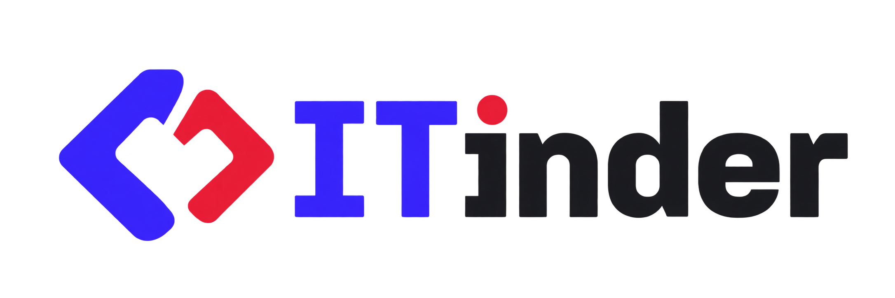
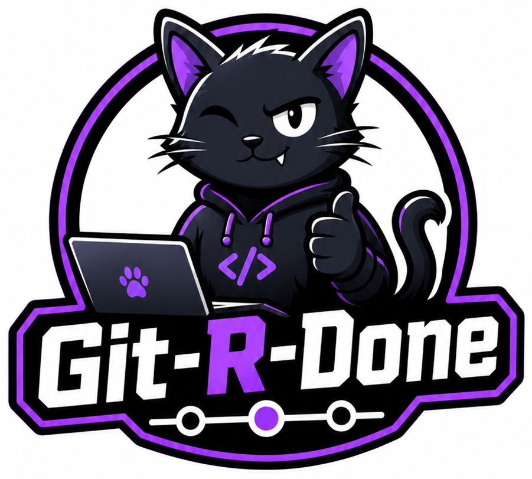

Включите звук: станция, шляпа и комната звучат.

Проект команды «Git-R-Done» в рамках задачи конкурса IT-решений «Цифровая платформа-агрегатор ИТ-вакансий с верифицированным профилем достижений участника Федерации спортивного программирования (ФСП)»